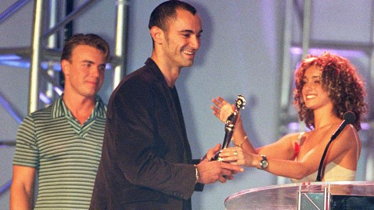

In memory of Robert Miles
The Legend of Electronic Music

Robert Miles was born in Fleurier, Switzerland. Miles became proficient at playing the piano during his youth in Friuli, Italy, in the small town of Fagagna, where his family moved when he was young, and had been in the music scene since 1984. He worked as a DJ in some Italian clubs and private radio networks and in 1990, he used his savings to establish his own recording studio and a pirate radio station
1994–1997: Breakthrough and Dreamland
In 1994, Miles wrote a trance/chill-out piece based on acoustic guitar chords and soft synthesizer effects, "Children", which was later developed into a dream house song featuring a piano theme on top. The single picked up sales slowly, but within two weeks of its official release in 1995, it had sold more than 350,000 copies all over Europe and topped the charts in many countries. The single received an unprecedented "Essential Tune of The Week", three weeks in a row on Pete Tong's show causing a furious bidding war. It was then signed to Deconstruction Records in the UK by Giles Goodman of Dynamik Music (who represented Platipus Records the initial UK licensee). After occupying the Euro Top 100 chart number 1 spot for thirteen consecutive weeks,[4] by 1997, "Children" had sold more than 5 million copies worldwide. It earned Miles platinum records[5][6] in many countries, a Brit Award (Robert Miles is, to date,[when?] the only Italian artist who has received the award) as Best International Male Newcomer 1997, a World Music Award as World's Best Selling Male Newcomer and various other awards.
Miles' next single was "Fable". Part of this song was used in the theatrical trailer for the U.S. movie Ever After[8] starring Drew Barrymore and Dougray Scott. His debut album Dreamland was released on 7 June 1996 in Europe, and released in the United States about a month later, with covering "One and One" of Polish pop diva Edyta Górniak. This cover became very popular (it reached number 1 in the Euro Top 100 Singles Chart during the Christmas period and remained in the top spot for six consecutive weeks) and was later released as a single in Europe and the U.S
"Children is an instrumental and dance anthem, one of the most ever loved tracks. With Robert Miles a part of my life dies with him."
In November 1997, Miles released another track, "Freedom", which was one of the key tracks on his second album 23am featuring vocals provided by Kathy Sledge of Sister Sledge. Containing a different feel from the previously more club-oriented Dreamland, 23am incorporated more lyrics-driven songs than its predecessor while maintaining Miles' trademark piano sound from the first album.
After splitting from /deConstruction/BMG and his former management in London, he set up his own independent record label S:alt Records (with S:alt being short for suitably:alternative) in 2001 and released his third album, Organik, featuring the new single "Paths" with vocals provided by Nina Miranda of Smoke City. Guests on the album included Trilok Gurtu, Bill Laswell and Nitin Sawhney. Music from Organik was used on various movie soundtracks such as The Bourne Identity, Derrida, and City of Ghosts. It was licensed to Narada Productions' Shakti Records label in the USA. In 2002, an album containing mainly remixes of songs found on Organik was released. The album, appropriately entitled Organik Remixes, contained remixes by the winners of the remixing contest held on Robert Miles's Web site, as well as remixes from well-known artists such as Future Sound of London, Riton, and Alexkid among others. The album also had one new track, "Bhairav", which featured the vocals of Amelia Cuni.
In 2004, Miles released Miles Gurtu, his fourth album, which was a collaboration with percussionist Trilok Gurtu and included jazz and electronica elements. Also guesting on the album were Nitin Sawhney, Jon Thorne, Mike Patto and Paul Falloon.
His fifth album entitled Th1rt3en[13] was released worldwide on Salt Records in February 2011. For this album, Miles produced a blend of alternative and progressive rock with ambient and electronic soundscapes. In 2012 Miles finished working on the soundtrack for the movie documentary The Turn of THIS Century, directed by Peter Beyak and featuring the photography of Life Magazine. He founded a new FM and online alternative radio station, Open Lab, broadcasting from Ibiza, a project bringing together culture, arts, media, technology and innovation.
Miles died in Ibiza, Spain, on 9 May 2017 at the age of 47 after a 9-month battle with stage 4 metastatic cancer. Miles's Open Lab station was taken off-air shortly afterwards pending discussions on the future of the station. After receiving many messages from people expressing dismay at the station’s suspension, it was announced that the station would be returning soon.
R.I.P Robert My great artist,your music always in my mind!